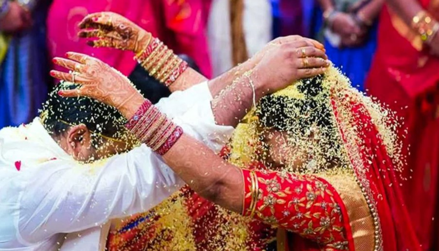

Gowri Pooja

The wedding begins with the groom offering prayers to Lord Ganesha at the mandap while the bride performs the Gowri puja. This ritual invokes blessings from Goddess Gowri, symbolizing prosperity, harmony, purity, and strength. The "Pravara" ritual follows, where the ancestry of both families is recited.
Jeelakarra-Bellam

This sacred ritual involves the couple placing a paste made from cumin seeds and jaggery on each other's heads. It symbolizes the inseparable bond between the couple and their unique personalities merging in harmony.
Mangala Sutra Dharana

The groom ties the sacred mangala sutra around the bride’s neck in three knots, representing acceptance in thought, speech, and action. This ritual signifies the union of mind, body, and soul as the couple begins their journey as husband and wife.
Talambralu
The bride and groom playfully shower each other with rice and turmeric, symbolizing fertility, abundance, auspiciousness, and protection from evil forces. It marks the start of a prosperous and happy married life.
Saptapadi or Saat Phere

The couple takes seven steps around a sacred fire, each representing a vow. These promises include loyalty, love, mutual respect, and understanding, forming the foundation of their married life.
Sindoor Daan

The groom applies sindoor to the bride’s forehead, symbolizing the start of their marital bond for seven lifetimes and unbroken good fortune.
Appaginthalu or Vidayi

This emotional ritual marks the official handing over of the bride from her parents to her husband and in-laws, symbolizing her new beginning as a wife and daughter-in-law.